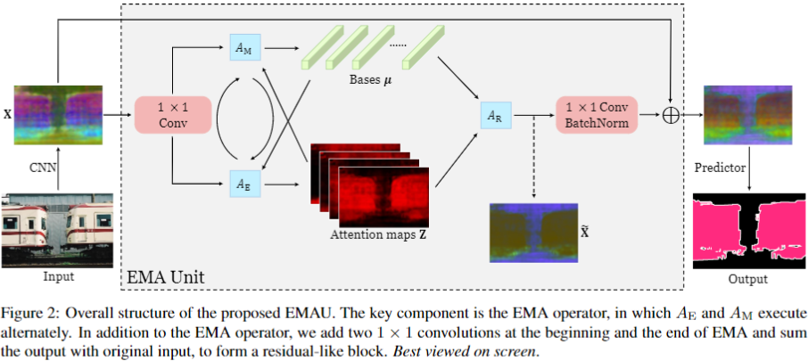

主要工作
基于高斯混合模型和EM优化算法，提出了一种自注意力机制，用一组基向量来对特征图进行重构，达到简化特征图以及去除噪声的目的。
主要思想
将\(C \times H \times W\)大小的特征图看做\(N \times C\)的\(N\)个\(C\)维随机变量\(X\)，其中\(x_i \in \mathbb{R}^{C}\)表示像素\(i\)对应的特征向量。同构构造一组基向量\(\mu \in \mathbb{R}^{K \times C}\)以及一个隐变量\(Z \in \mathbb{R}^{N \times K}\)，其中\(\mu_i \in \mathbb{R}^C\)表示一个其中一个基向量，\(z_i \in \mathbb{R}^K\)表示第\(i\)个像素点在这组基向量下的坐标，文中最终把输入的特征图\(X\)进行了重构，得到\(\hat{X} = Z \times \mu\)。
具体实现
通过高斯混合模型，对\(x_n\)建模得到\(p(x_n) = \sum_{k=1}^K z_{nk}\mathcal{N}(x_n|\mu_k,\Sigma_k)\)，再通过EM算法（可见我之前的文章Post not found: EM算法学习笔记），求出\(\mu\)和\(Z\)，这里将EM算法，分解为\(A_E\)和\(A_M\)，对应EM算法的E步骤和M步骤，再加上重构步骤\(A_R\)，构成一种self-attention操作，称为Expectation-Maximization Attention（EMA）。
在实现过程中，EMA Unit的结构类似于带有bottleneck的Residual结构，只是将\(3 \times 3\)卷积换成了循环的\(A_E\)和\(A_M\)操作，整体结构如下。

在这个结构中，第一个\(1 \times 1\)卷积之后，不能有ReLU激活函数，作者解释说这是因为一旦使用ReLU激活，输入的范围将从\((-\infty, \infty)\)变为\([0, \infty)\)，导致EM算法得出的结果中，\(\mu\)将是一个半正定矩阵，其表达能力只相当于普通卷积操作的一半。
在\(A_E\)阶段，计算\(Z^{(t)}=softmax(\lambda X(\mu^{(t-1)})^T)\)，这里\(\lambda\)是控制\(Z\)分布的一个超参数，作者将\(\lambda\)设置为1。
在\(A_M\)阶段，计算\(\mu^{(t)}_k=\frac{z^{(t)}_{nk}x_n}{\sum_{m=1}^Nz^{(t)}_{mk}}\)
在训练过程中，对于batch数据，\(\mu\)的值不是每个数据都去计算一次，在第一个mini-batch中，使用Kaiming初始化方法对\(\mu^{(0)}\)进行初始化（这里将矩阵乘法看做1*1的卷积），之后的mini-batch中，\(\mu^{(0)}\)不能简单的使用反向传播来更新，作者解释说是因为在不断的迭代过程中，容易引起梯度消失或者梯度爆炸等问题，这样更新会导致\(\mu^{(0)}\)不稳定，因此论文中提出，使用滑动平均对\(\mu^{(0)}\)进行学习，每个图像在EM迭代之后所得到的\(\mu^{(T)}\)将用于更新\(\mu^{(0)}\)：\(\mu^{(0)} \leftarrow \alpha\mu^{(0)} + (1-\alpha)\mu^{(T)}\)，而在推断过程中，\(\mu^{(0)}\)的值是固定的。
最后，由于\(\mu^{(T)}\)和\(\mu^{(0)}\)偏差不能太大，因此对于\(\mu\)还有一个L2Norm处理，将\(\mu_k\)的长度归一化。